Why Traditional Business Intelligence techniques are failing to resolve today’s Business problems?
The goal of Business Intelligence is to provide right-time information to management and function as a decision support mechanism. Below are few challenges in using Traditional Business Intelligence techniques.
Current focus of BI and analytics platform market's is shifting from IT-led reporting to business-led self-service analytics. There are number of tools are available for providing solutions around this:
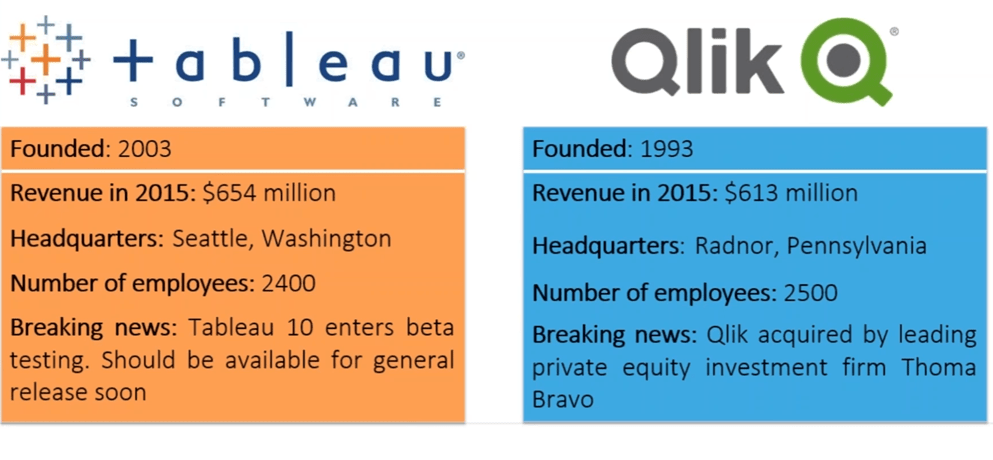
GARTNER MAGIC QUADRANT 2015 AND 2016
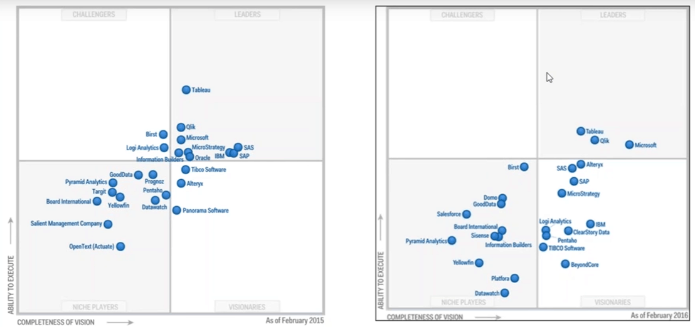
GARTNER MAGIC QUADRANT 2017
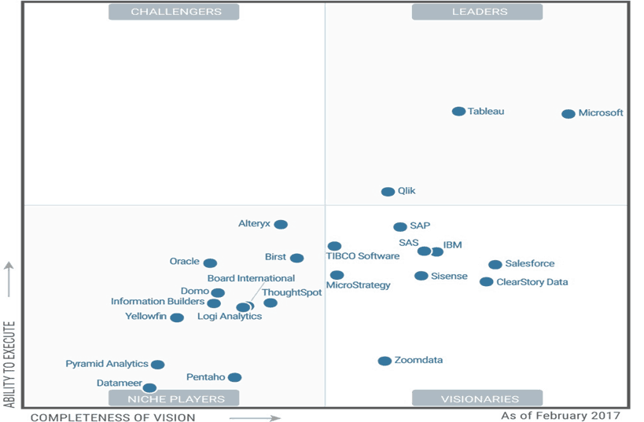
GARTNER MAGIC QUADRANT 2017:Business Analytics Services
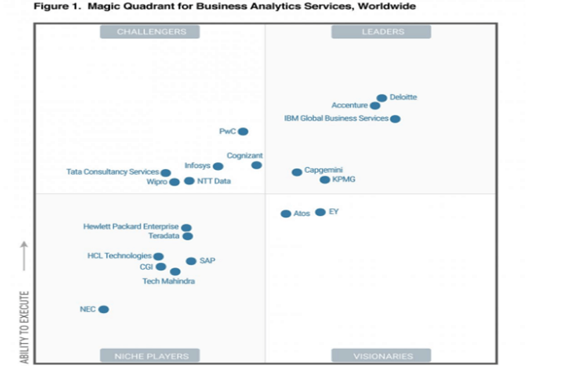
Revenue Forecast & Market Segments
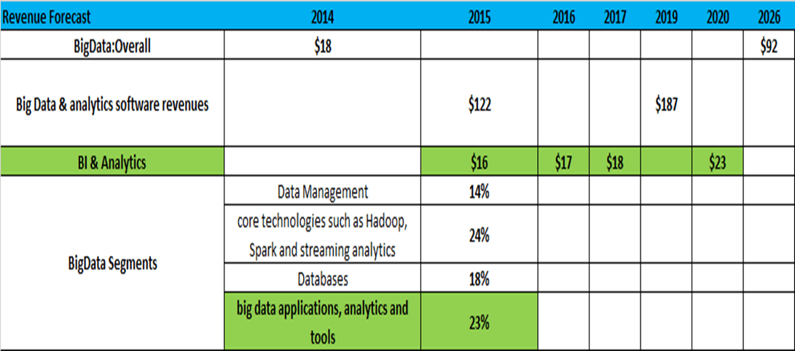
Approach to Bigdata Market for Business Development
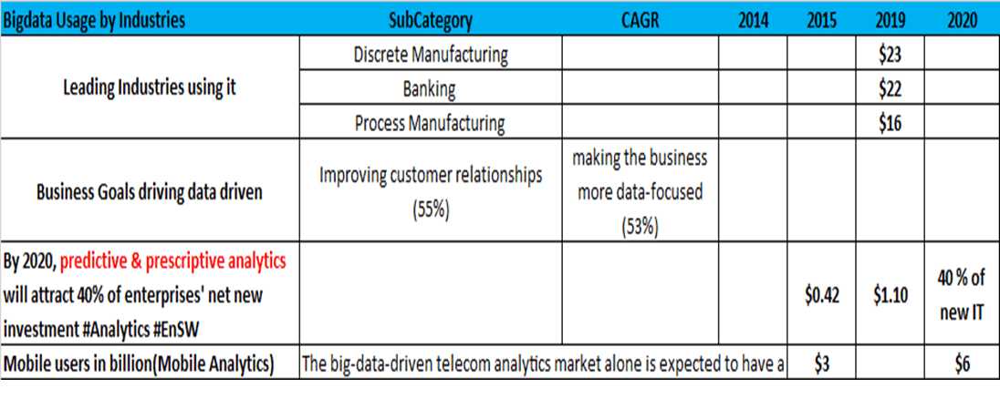
LET’S TALK BUSINESS
Business Use Case for Comparison:
EASE OF USE

ADVANCED ANALYTICS
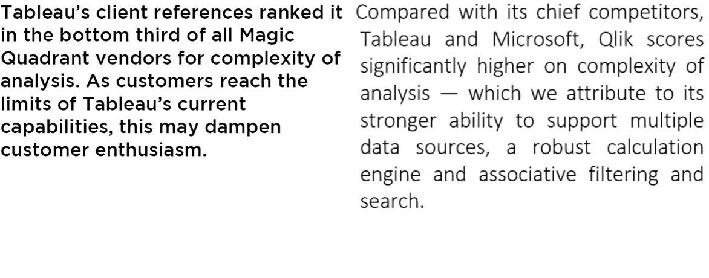
DATA PREPARATION
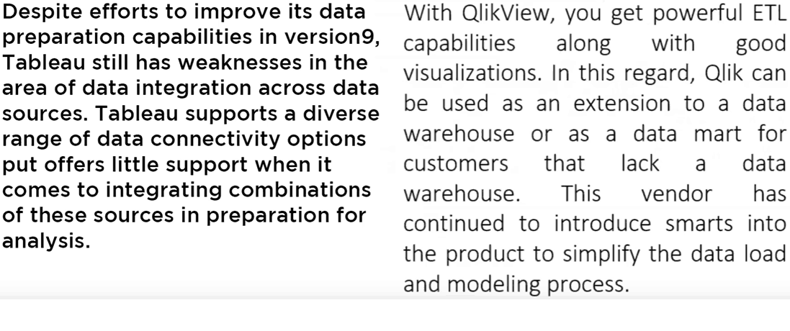
SECURITY
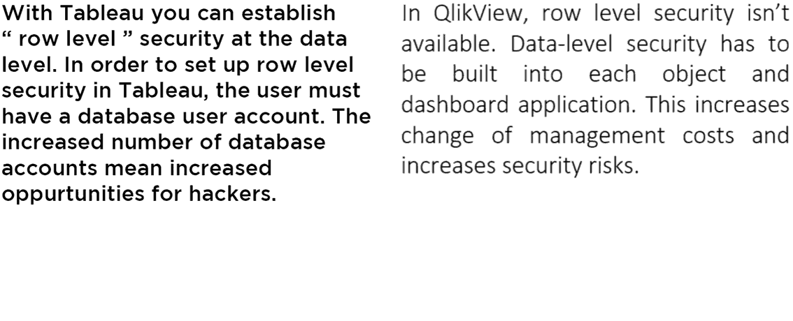
COST
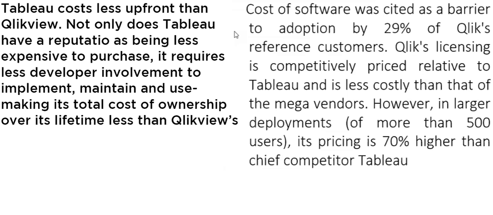
WHAT QLIKVIEW DOES ?
Qlik® is a leader in the visual analytics market, delivering intuitive platform-based solutions for self-service visualization and exploration, guided analytics and dashboards, custom and embedded analytics, and reporting to approximately 40,000 customers worldwide. Companies of all sizes, across all industries and geographies, use Qlik solutions to visualize and explore information, generate insight, and make more informed decisions.
In year 2014, Qlikview releases another product Qlik Sense. Imagine an analytics tool so intuitive, anyone in your company could easily create personalized reports and dynamic dashboards to explore vast amounts of data and find meaningful insights. That’s Qlik Sense - a revolutionary self-service data visualization and discovery application designed for individuals, groups and organizations. Qlik Sense lets you rapidly create visualizations, explore data deeply, reveal connections instantly, and see opportunities from every angle.
The QlikView vs. Qlik Sense Dilemma
WHY TO CHOOSE QLIKVIEW
There are three primary reasons and with the combination of these three factors, QlikView customers achieve rapid time to value at lower cost of deployment than with traditional BI solutions.
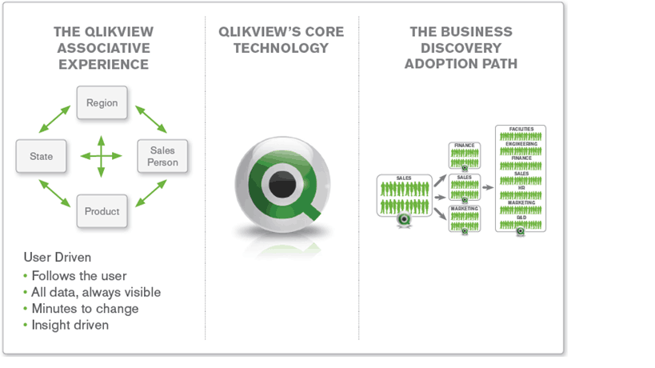
THE QLIKVIEW ASSOCIATIVE EXPERIENCE
The QlikView Business Discovery platform enables users to explore data, make discoveries, and uncover insights that can be used to help them solve business problems in new ways. One of QlikView’s primary differentiators is the associative experience it delivers to users. Business users conduct searches and interact with dynamic dashboards and analytics from any device. Users can gain unexpected insights because QlikView.
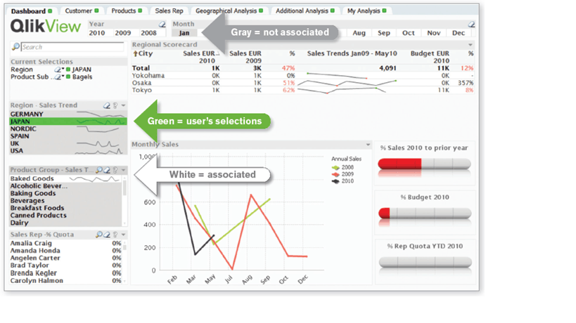
QLIKVIEW’S CORE TECHNOLOGY
The second major factor that differentiates QlikView is our core technology. QlikView is known as a pioneer in in-memory BI. In-memory technology is important for BI, for performance reasons. But just being in-memory isn’t all it takes to deliver a Business Discovery platform. Some vendors that offer traditional BI solutions based on queries and cubes are working to re-engineer their offerings to run in memory. These solutions may improve user response time. But as long as they are query- and cube-based, maintaining associations in the data requires hand coding — and therefore lots of time and money.
THE BUSINESS DISCOVERY ADOPTION PATH
QlikView penetrates enterprises by solving significant business problems that traditional BI can’t address. Typically, with QlikView:
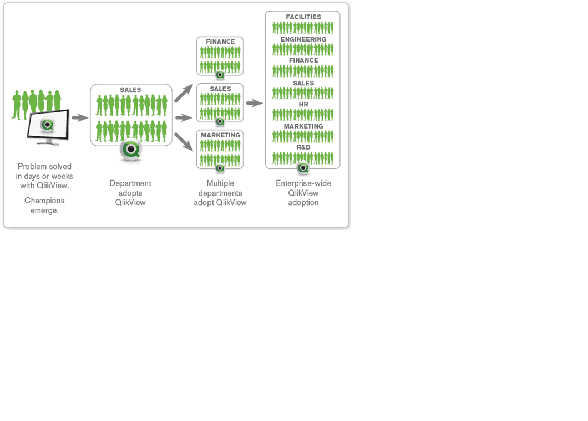
BUILDING AND MAINTAINING QLIKVIEW APPS IS FAST AND EASY
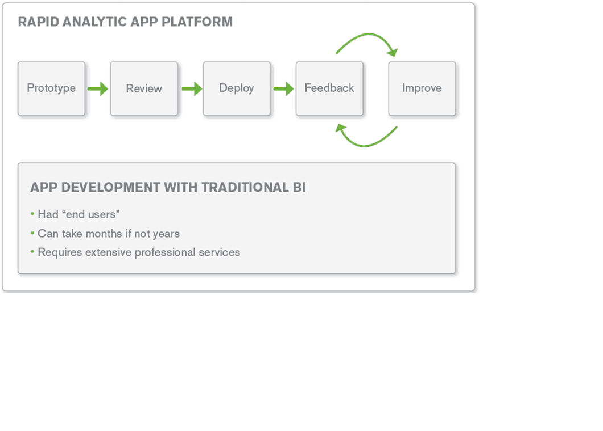
WITH QLIKVIEW, YOU CAN HAVE BOTH AGILITY AND GOVERNANCE
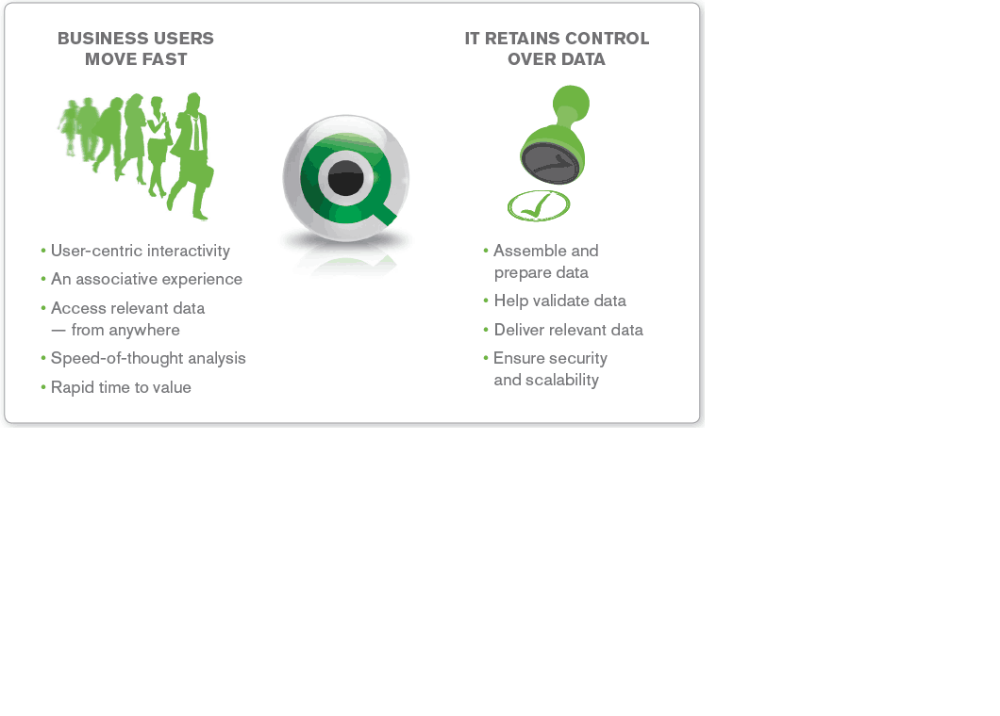
QLIKVIEW CUSTOMERS ACHIEVE RAPID TIME TO VALUE
QlikView customers’ Business Discovery adoption path contrasts sharply with that of traditional BI solutions. With traditional BI solutions, IT spends months or even years building out dashboards and reports based on user requirements. Users get their hands on the dashboards and reports and immediately request changes based on what they see. IT then spends more weeks or months implementing those changes. Users spend time with the new dashboards and reports, and then come up with more requirements as new questions come to mind. It’s a long, painful cycle
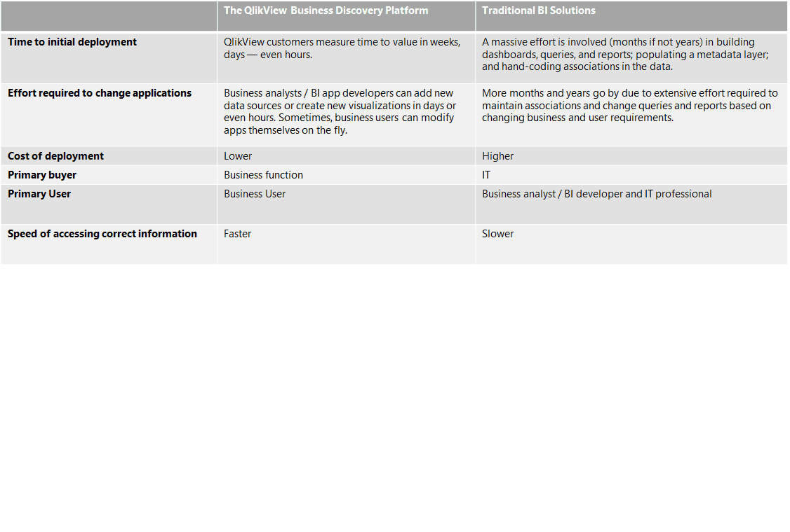
QLIKVIEW BUSINESS DISCOVERY PLATFORM
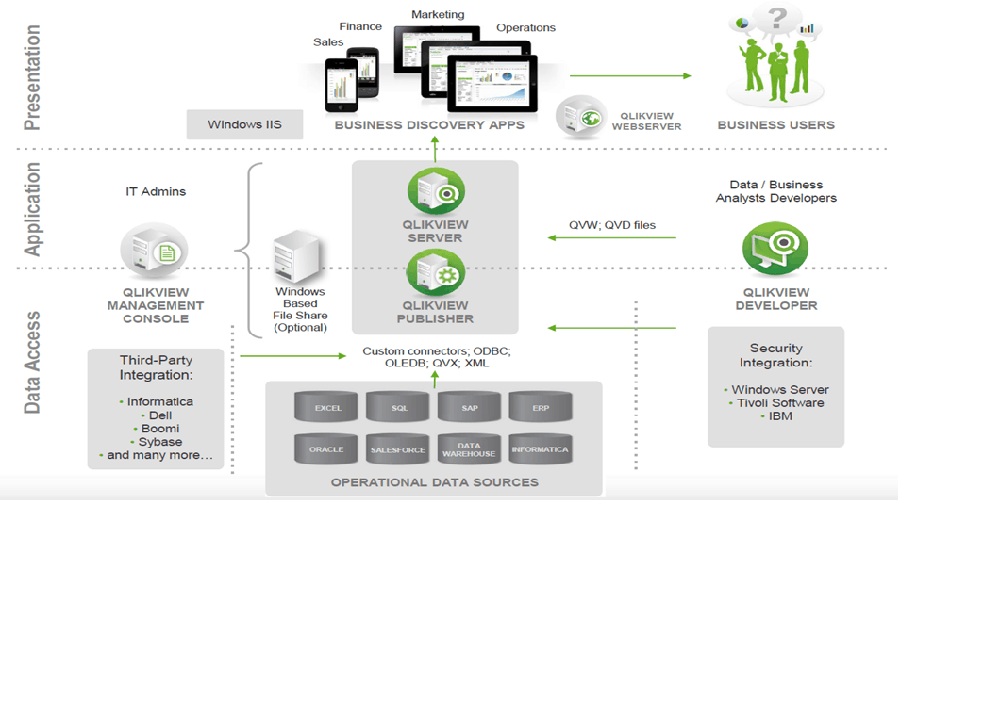
FAQ
Does qlickview expects source data to be dimensionally modelled? No. QlikView works best with raw data and loads individual tables (from different data sources if required) that are then associated within QlikView. There is normally no need to pre-process or pre-aggregate the data. QlikView can connect directly to databases and files, or a data warehouse if you have one. QlikView has its own ETL capabilities if a data warehouse is not in place.
How it identidies facts and dimensions? These do not have to be defined explicitly.
Does every document or app will have its own data model? Yes. A data model can contain multiple tables and from multiple data sources, but the tables need to be associated (joined).
You will have a large data model in qlickview and you can create multiple apps/document based on user analysis? It is possible to create a single large app as long as it has a single data model. If required you can then use the QlikView Publisher to automatically split the app into multiple smaller apps with different user permissions, e.g. one for each sales rep, one for each country etc. QlikView calls this "loop and reduce"
If we have dimensionally modelled bus architecture in place , do we need to create a multiple documents that caters to diff business functions? Not necessarily. QlikView is very flexible in that respect.
Can qlickview create a dashboard ( again a super document) that spans across the subject areas to create enterprise view of business? Yes
Can it read social media data? Connections to Twitter and Facebook are possible via QVSource.com
How qlickview reads ‘big data’? can it read unstructured data ? QlikView "cannot read unstructured data directly but there are many indirect + 3rd party options:
TABLEAU
Tableau is an easy to learn tool that does an effective job of slicing and dicing your data and creating great visualizations and dashboards. Tableau can create better visualizations than Excel and can most definitely handle much more data than Excel can. If you want interactivity in your plots, then Tableau is surely the way to go.
Tableau Desktop
Backbone of product offering. Use Tableau Desktop to create your workbooks.
Tableau Server
A secured intranet portal where user can easily publish and share their Tableau workbooks by simply providing a link to workbook. Does not require Tableau Desktop to consume information, just a browser.
Tableau Reader
Free tool that allows you to open, but not edit Tableau workbooks. You can only read what others had created.
Tableau Online
Cloud based “Tableau Server” solution. Tableau will host your server, enabling you to easily scale and publish content right out the gate. It’s a cloud-based solution for creating workbooks over the cloud.
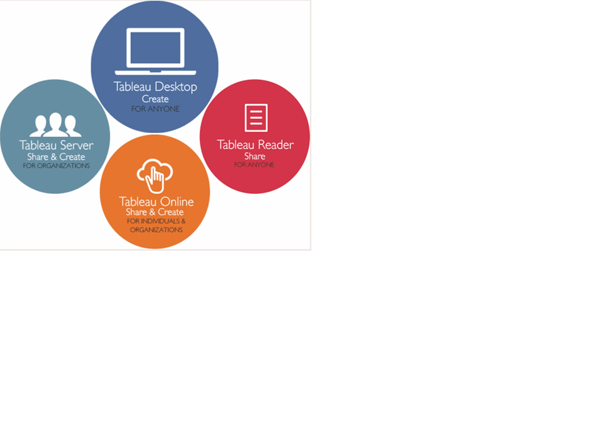
PROS AND CONS OF TABLEAU
Pros
Completely Interactive: Tell a story with your data. Filter and step from summary to detail level in real time.
Self Service: Minimal IT involvement throughout the entire development process.
Agile: Easily iterate on your development with no impact to existing business operation.
Short Learning Curve: Tableau makes it relatively easy to build a beautiful dashboard.
High Performance: Tableau Proprietary Datasource (Tableau Data Extract) enables you to take the load off the database and store data in column based, high performance TDE file.
Real Time: Live connections between tableau and your datasource are possible. Keep in mind that an already slow database will not be faster in Tableau when reading.
Easy to Share: Send your Tableau workbook along with all the data you are using in one simple packaged file.
PROS AND CONS OF TABLEAU (contd.)
Cons/Limitations
Not a data warehouse replacement. Tableau is not an ETL tool. Garbage In, Garbage out.
Not meant for operational reporting. If its look like excel in Tableau, you are doing it wrong.
Output Limitation. By default Tableau limits the number of columns (dimensions) displayed in table to 6.
No Version management. Manually save different versions of workbook incase you need to rollback.
Highly formatted Reports. Tableau is not able to create reports that resembles like a Utility Bills.
QLIKVIEW VS TABLEAU - A COMPARISON
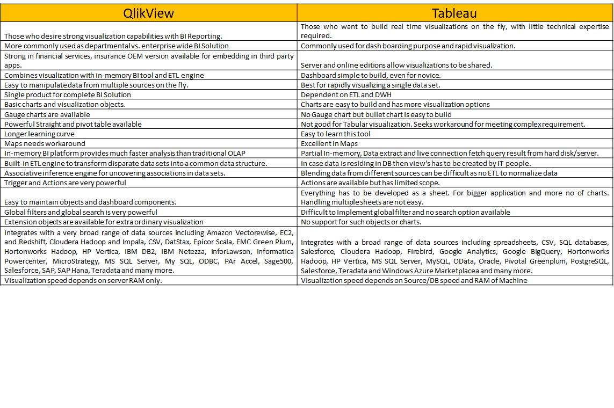
QLIKVIEW VS TABLEAU – BUSINESS CRITERIA COMPARISON
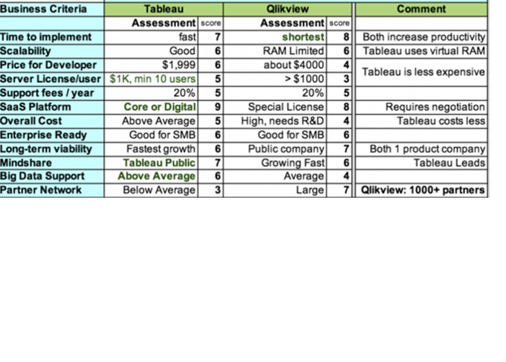
QLIKVIEW VS TABLEAU – VISUALIZATION CRITERIA COMPARISON
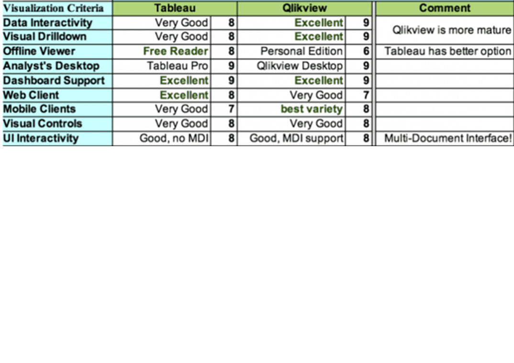
QLIKVIEW VS TABLEAU – TECHNICAL CRITERIA COMPARISON
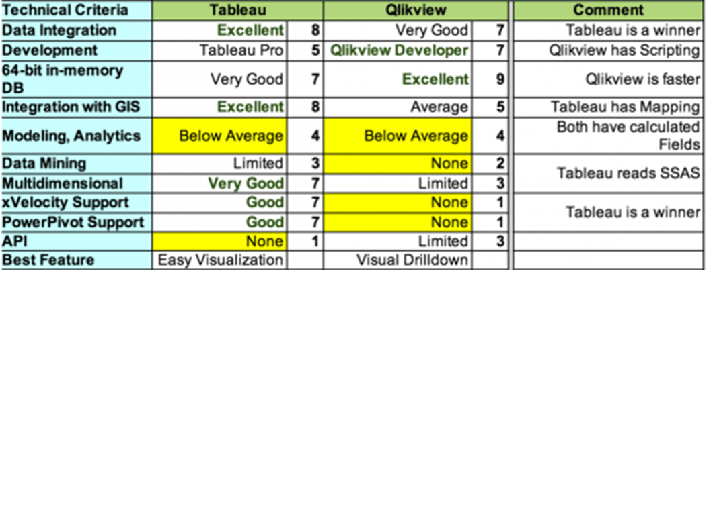
;